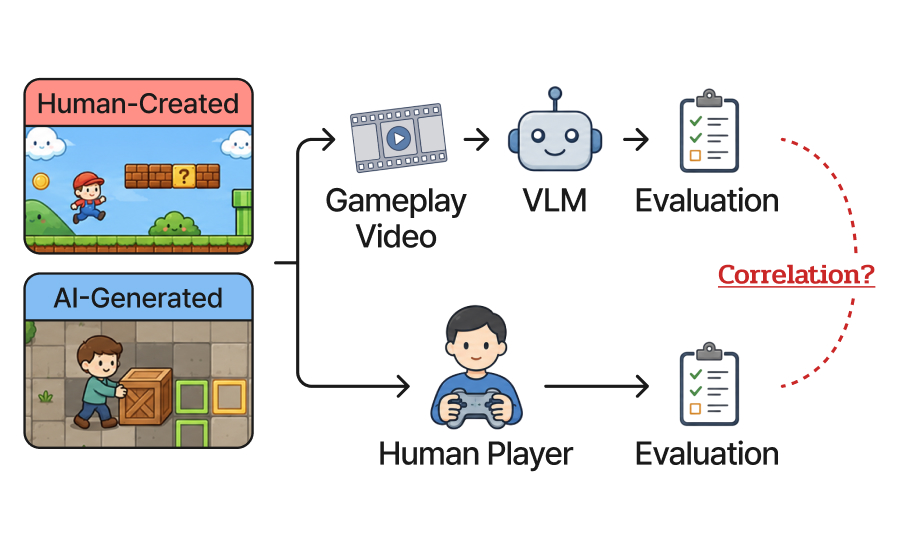
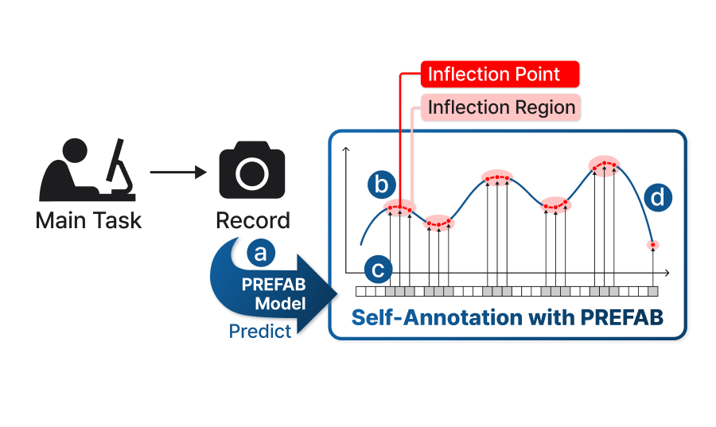
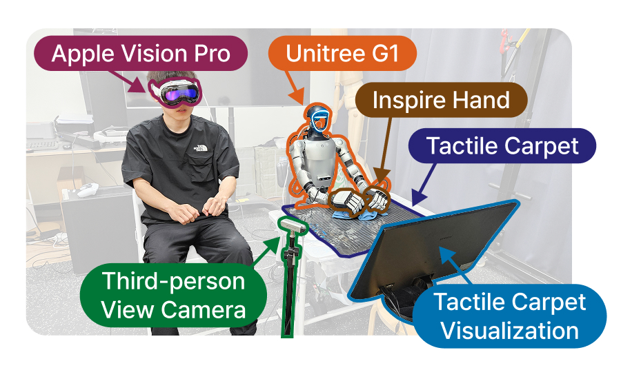
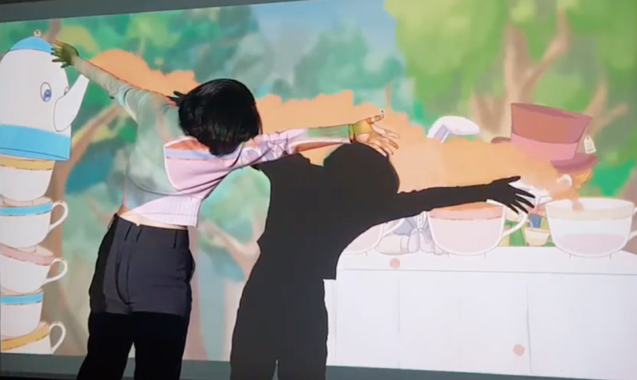

About
Hello! I am an Integrated M.S./Ph.D. student at Gwangju Institute of Science and Technology (GIST), working in the Cognition & Intelligence Lab under the supervision of Prof. Kyung-Joong Kim.
My research focuses on Game Artificial Intelligence and Affective Computing. I am interested in applying AI widely across the gaming domain.
News
2026
-
Jun
Our paper 'Judging the Imitation Game' has been accepted as an auxiliary paper at IEEE CoG 2026.
-
May
I started a 2-month research visit at Prof. Daniela Rus's lab at MIT CSAIL for collaborative research discussions.
-
Mar
Our team won 1st Place in the Orak Game Agent Challenge 2025 (SLM Track) hosted by Krafton.
-
Jan
Our paper 'PREFAB' has been accepted to ACM CHI 2026 (Honourable Mention).
2025
-
Sep
Our paper 'A Humanoid Visual-Tactile-Action Dataset for Contact-Rich Manipulation' has been accepted to the IROS 2025 Workshop on Robotic Fine Manipulation.
Publications
2026

Judging the Imitation Game: Exploring Creator Bias in VLM-Based PCG Level Evaluation
IEEE Conference on Games (CoG) 2026 · Auxiliary Paper · Sep, 2026 (Accepted)

PREFAB: PREFerence-based Affective Modeling for Low-Budget Self-Annotation
ACM CHI 2026 (🏆 Honourable Mention Awarded) · Apr 13, 2026
2025

A Humanoid Visual-Tactile-Action Dataset for Contact-Rich Manipulation
IROS 2025 Workshop on Robotic Fine Manipulation: Integrating Tactile, Visual, and Intelligent Control · Oct 20, 2025
2024
2023

A Proposal for a Novel Input-Output Approach in Interactive Media Games: A Study on Shadow Detection Technology
Korea Game Society (2023 Spring Academic Conference) · Jun 3, 2023
Press & Media

GIST Professor Kim Kyung-joong's Team Develops 'Emotion-Reading AI'